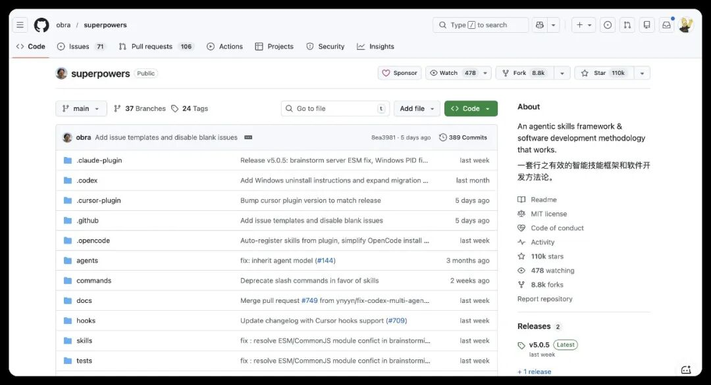
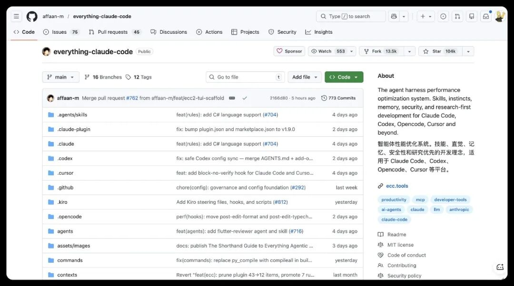
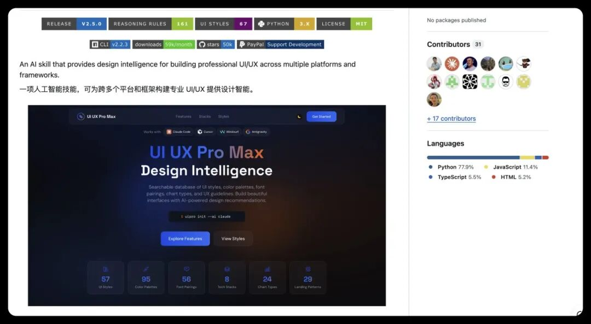
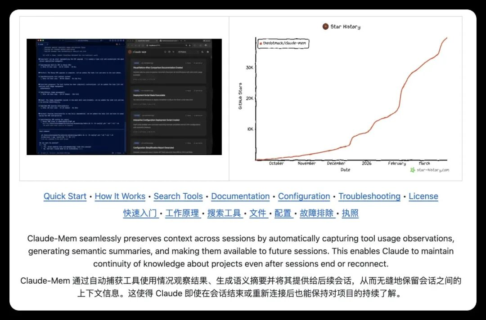
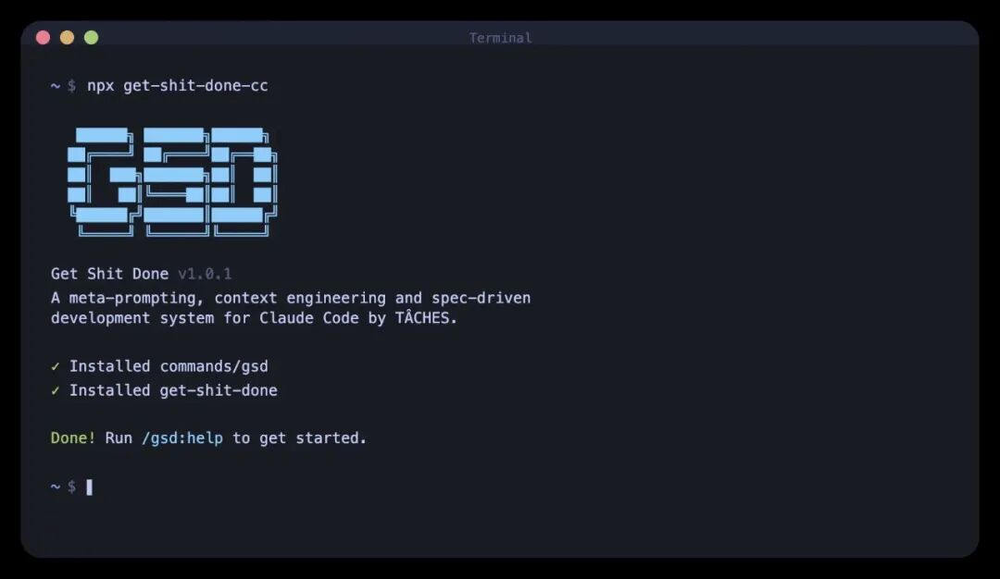
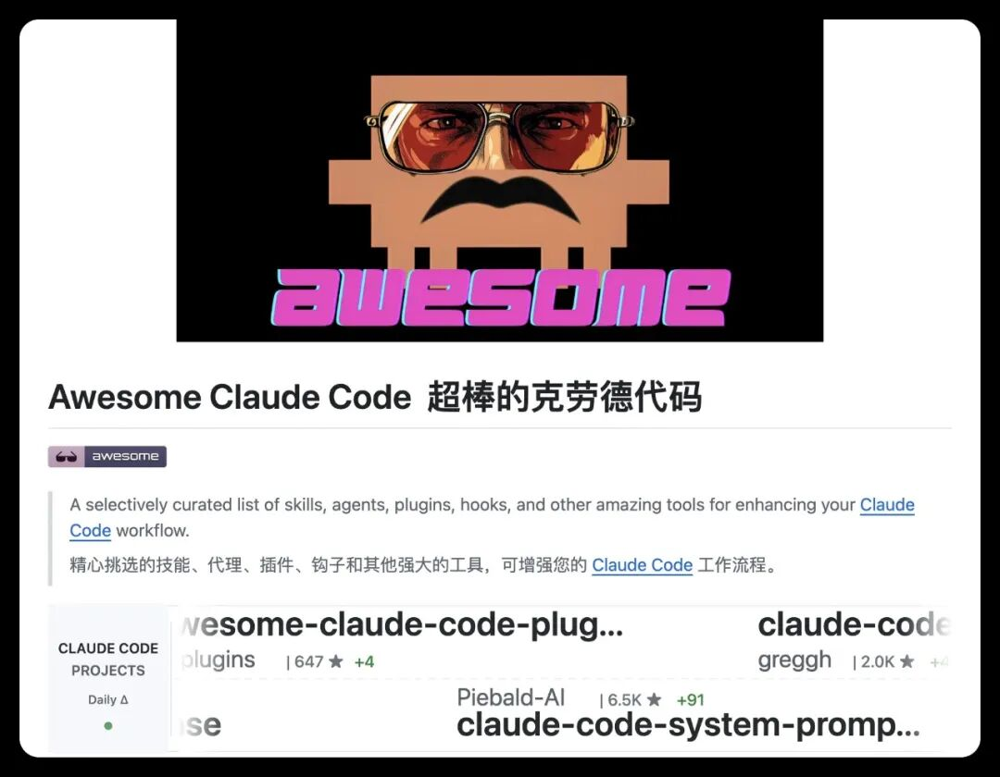
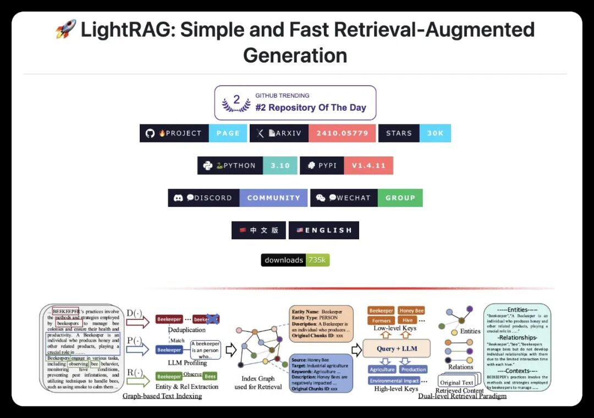
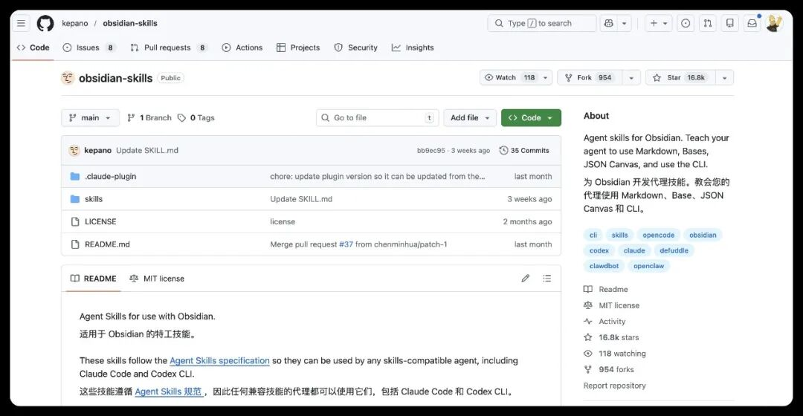
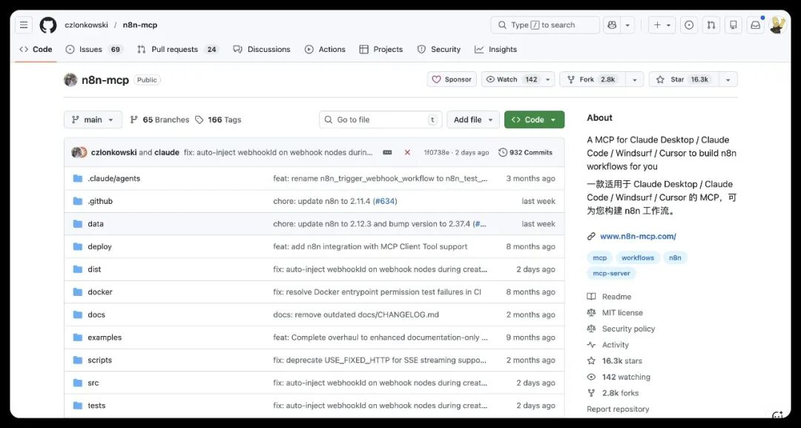

Claude Code 9 个必装 Skill：从技能框架到自动化工作流的完整装备清单
来源：微信公众号 归档日期：2026-04-21 抓取状态：成功 原文字符：3742｜配图：9 张
摘要速览
Claude Code 原生功能不够用，需要通过 Skill/插件生态补齐技能框架、持久记忆、UI 设计、RAG 检索、自动化工作流等核心能力。
核心内容
- Superpowers（技能框架）：星标最高的核心框架，内置 TDD、代码审查、调试、架构设计等 20+ 专业技能，让 CC 从写函数工具升级为全程编程教练
- Everything Claude Code（全套能力）：Anthropic 官方黑客松冠军，一键配齐技能系统 + AI 记忆 + 安全钩子 + 研究驱动开发，兼容 Codex/Cursor 多平台
- UI UX Pro Max（AI 设计师）：解决"功能做完界面太丑"，让 CC 掌握设计系统、响应式布局、无障碍设计，描述需求直出界面代码
- Claude Mem（永久记忆）：自动记录技术决策、文件结构、踩坑经验，AI 压缩关键信息带入后续对话，从一次性助手变长期项目搭档
- GSD (Get Shit Done)（极简开发）：元提示模板 + 规范检查清单 + 任务拆解，轻量化强落地，适合讨厌企业级冗余流程的人
- Awesome Claude Code（生态导航）：工具库大全/导航站，索引全部技能、钩子、斜杠命令、MCP 服务器，避免功能重叠和冲突
- LightRAG（轻量 RAG）：EMNLP 2025 论文项目，无需复杂向量数据库，几行代码整合本地文档库，按你的技术栈给定制建议
- Obsidian Skills（知识库操作）：让 CC 直接操作 Markdown 笔记、Bases 数据库、JSON Canvas、CLI 命令，自动整理会议记录和项目知识库
- n8n-MCP（自动化工作流）：基于 n8n 的 MCP 服务器，用自然语言做自动化——代码提交自动测试、PR 通过自动部署、告警自动建 Issue
可执行启发
（待补充）
我的想法
（待补充——思考方向：① 我目前已装了 Superpowers + Obsidian Skills + Claude Mem，对比这个清单还缺什么？LightRAG 对知识库检索有没有比 memsearch 更好的方案？② n8n-MCP 能否和我的番茄小说流水线结合，比如写完自动触发审核？）
为什么有用
这是目前看到的最全面的 Claude Code Skill 装备清单，覆盖了开发全链路：框架→记忆→设计→开发→检索→知识库→自动化。其中 Superpowers、Claude Mem、Obsidian Skills 我已经在用，LightRAG 和 n8n-MCP 值得关注。
适用 / 不适用场景
- 适用：用 Claude Code 做日常开发的程序员；想搭建完整 AI 开发环境的人
- 不适用：不用 Claude Code 的人；已经有成熟工具链不想折腾的人
安装建议（文中推荐）
- 必装三件套：Superpowers + Claude Mem + Awesome Claude Code
- 按需搭配：前端→UI UX Pro Max / RAG→LightRAG / Obsidian 用户→Obsidian Skills / 自动化→n8n-MCP
- 避坑：技能别贪多冲突比缺失更影响效率；优先选活跃更新项目；安装前备份配置
原文：hacking（Hacking黑白红）
如今AI辅助开发已经成为程序员的标配，Claude Code凭借强大的代码能力与开放的插件生态，快速收获大量开发者青睐，头部开源项目星标已突破数十万。
想要把Claude Code用透，只靠原生功能远远不够。今天整理9个必装Skill，覆盖技能框架、记忆、设计、自动化等核心场景，搭配GitHub直达链接，新手也能直接抄作业。
01 Superpowers — Agent技能框架
Claude Code生态星标最高的核心框架，一套完整的AI辅助开发方法论。
内置TDD工作流、代码审查、系统调试、架构设计等20+专业技能，每个技能都配有执行流程、质量检查清单和最佳实践模板，让AI从"写函数工具"升级为"全程编程教练"。
GitHub：https://github.com/obra/superpowers
02 Everything Claude Code — 黑客松冠军工具
Anthropic官方黑客松冠军作品，一键配齐Claude Code全套能力。
集成技能系统、AI记忆、安全钩子、研究驱动开发模式，兼容Codex、Cursor等多平台，在不同AI编辑器之间保持能力统一，适合快速搭建完整AI开发环境。
GitHub：https://github.com/affaan-m/everything-claude-code
03 UI UX Pro Max — AI设计师大脑
解决全栈开发者"功能做完、界面太丑"的痛点。
让Claude Code掌握设计系统、响应式布局、无障碍设计、用户旅程规划，描述需求即可直接生成专业级界面代码，不用切设计工具，代码即成品。
GitHub：https://github.com/nextlevelbuilder/ui-ux-pro-max-skill
04 Claude Mem — 永久记忆你的项目
解决AI"换话题就失忆"的问题。
自动记录技术决策、文件结构、踩坑经验，用AI压缩关键信息并带入后续对话，让Claude始终记住你的技术栈、配置与项目细节，从"一次性助手"变成"长期项目搭档"。
GitHub：https://github.com/thedotmack/claude-mem
05 GSD (Get Shit Done) — 轻量高效开发
极简主义开发者福音，不搞复杂框架，只专注"把事情做完"。
提供元提示模板、规范检查清单、任务拆解方法，轻量化、强落地，快速交付高质量代码，适合讨厌企业级冗余流程的程序员。
GitHub：https://github.com/gsd-build/get-shit-done
06 Awesome Claude Code — 生态导航地图
Claude Code工具库大全，相当于生态"导航站"。
索引全部技能、钩子、斜杠命令、MCP服务器，帮你避开功能重叠、技能冲突，快速找到最适合自己的插件，新手不迷路。
GitHub：https://github.com/hesreallyhim/awesome-claude-code
07 LightRAG — 轻量级RAG框架
EMNLP 2025论文项目，极简RAG开发利器。
无需复杂向量数据库，检索快、接入简单，几行代码就能整合本地文档库，让AI按你的技术栈与团队规范给出定制建议。
GitHub：https://github.com/HKUDS/LightRAG
08 Obsidian Skills — AI操控知识库
为Obsidian重度用户量身打造。
让Claude Code直接操作Markdown笔记、Bases数据库、JSON Canvas、CLI命令，可自动整理会议记录、构建项目知识库、关联技术文档。
GitHub：https://github.com/kepano/obsidian-skills
09 n8n-MCP — 自动化工作流引擎
基于开源自动化工具n8n的MCP服务器，用自然语言做自动化。
支持代码提交自动测试、PR通过自动部署、告警自动建Issue，不用手动拖拽节点，一句话让AI生成完整工作流配置。
GitHub：https://github.com/czlonkowski/n8n-mcp
安装建议
✅ 必装3件套：Superpowers + Claude Mem + Awesome Claude Code
🔧 按需搭配：前端开发→UI UX Pro Max / RAG应用→LightRAG / Obsidian用户→Obsidian Skills / 自动化需求→n8n-MCP
避坑提醒：技能别贪多，冲突比缺失更影响效率；优先选持续更新的活跃项目；安装前备份配置，避免兼容问题；按需安装，不盲目堆插件。
原文沉淀
目录
- Superpowers — Agent技能框架
- Everything Claude Code — 黑客松冠军工具
- UI UX Pro Max — AI设计师大脑
- Claude Mem — 永久记忆你的项目
- GSD (Get Shit Done) — 轻量高效开发
- Awesome Claude Code — 生态导航地图
- LightRAG — 轻量级RAG框架
- Obsidian Skills — AI操控知识库
- n8n-MCP — 自动化工作流引擎
如今AI辅助开发已经成为程序员的标配，Claude Code凭借强大的代码能力与开放的插件生态，快速收获大量开发者青睐，头部开源项目星标已突破数十万。
想要把Claude Code用透，只靠原生功能远远不够。今天整理9个必装Skill，覆盖技能框架、记忆、设计、自动化等核心场景，搭配GitHub直达链接，新手也能直接抄作业。
Superpowers — Agent技能框架
Claude Code生态星标最高的核心框架，一套完整的AI辅助开发方法论。
内置TDD工作流、代码审查、系统调试、架构设计等20+专业技能，每个技能都配有执行流程、质量检查清单和最佳实践模板，让AI从“写函数工具”升级为“全程编程教练”。
GitHub：https://github.com/obra/superpowers

Everything Claude Code — 黑客松冠军工具
Anthropic官方黑客松冠军作品，一键配齐Claude Code全套能力。
集成技能系统、AI记忆、安全钩子、研究驱动开发模式，兼容Codex、Cursor等多平台，在不同AI编辑器之间保持能力统一，适合快速搭建完整AI开发环境。
GitHub：https://github.com/affaan-m/everything-claude-code

UI UX Pro Max — AI设计师大脑
解决全栈开发者“功能做完、界面太丑”的痛点。
让Claude Code掌握设计系统、响应式布局、无障碍设计、用户旅程规划，描述需求即可直接生成专业级界面代码，不用切设计工具，代码即成品。
GitHub：https://github.com/nextlevelbuilder/ui-ux-pro-max-skill

Claude Mem — 永久记忆你的项目
解决AI“换话题就失忆”的问题。
自动记录技术决策、文件结构、踩坑经验，用AI压缩关键信息并带入后续对话，让Claude始终记住你的技术栈、配置与项目细节，从“一次性助手”变成“长期项目搭档”。
GitHub：https://github.com/thedotmack/claude-mem

GSD (Get Shit Done) — 轻量高效开发
极简主义开发者福音，不搞复杂框架，只专注“把事情做完”。
提供元提示模板、规范检查清单、任务拆解方法，轻量化、强落地，快速交付高质量代码，适合讨厌企业级冗余流程的程序员。
GitHub：https://github.com/gsd-build/get-shit-done

Awesome Claude Code — 生态导航地图
Claude Code工具库大全，相当于生态“导航站”。
索引全部技能、钩子、斜杠命令、MCP服务器，帮你避开功能重叠、技能冲突，快速找到最适合自己的插件，新手不迷路。
GitHub：https://github.com/hesreallyhim/awesome-claude-code

LightRAG — 轻量级RAG框架
EMNLP 2025论文项目，极简RAG开发利器。
无需复杂向量数据库，检索快、接入简单，几行代码就能整合本地文档库，让AI按你的技术栈与团队规范给出定制建议。
GitHub：https://github.com/HKUDS/LightRAG

Obsidian Skills — AI操控知识库
为Obsidian重度用户量身打造。
让Claude Code直接操作Markdown笔记、Bases数据库、JSON Canvas、CLI命令，可自动整理会议记录、构建项目知识库、关联技术文档。
GitHub：https://github.com/kepano/obsidian-skills

n8n-MCP — 自动化工作流引擎
基于开源自动化工具n8n的MCP服务器，用自然语言做自动化。
支持代码提交自动测试、PR通过自动部署、告警自动建Issue，不用手动拖拽节点，一句话让AI生成完整工作流配置。
GitHub：https://github.com/czlonkowski/n8n-mcp

安装建议
✅ 必装3件套：
Superpowers + Claude Mem + Awesome Claude Code
🔧 按需搭配：
前端开发：UI UX Pro Max
RAG应用：LightRAG
Obsidian用户：Obsidian Skills
自动化需求：n8n-MCP
避坑提醒
技能别贪多，冲突比缺失更影响效率
优先选持续更新的活跃项目
安装前备份配置，避免兼容问题
按需安装，不盲目堆插件
Claude Code的真正价值，不只是让AI写代码，而是标准化流程、沉淀知识、自动化重复工作，打造懂你项目、守你规范的专属开发助手。
你在用哪些Claude Code技能？欢迎在评论区分享实战体验。
归属：[[02-输入/按主题/工具与技术/_index|工具与技术]]